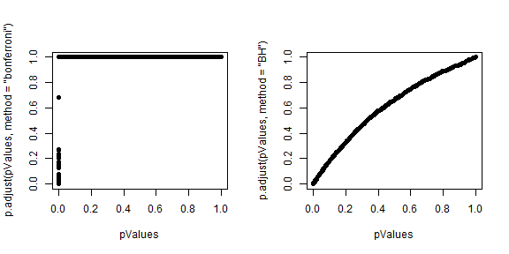

- Hypothesis testing/significance analysis is commonly overused
- Correcting for multiple testing avoids false positives or discoveries
- Two key components
- Error measure
- Correction
Multiple testing
Statistical Inference
Brian Caffo, Jeffrey Leek, Roger Peng
Johns Hopkins Bloomberg School of Public Health
Key ideas
Three eras of statistics
The age of Quetelet and his successors, in which huge census-level data sets were brought to bear on simple but important questions: Are there more male than female births? Is the rate of insanity rising?
The classical period of Pearson, Fisher, Neyman, Hotelling, and their successors, intellectual giants who developed a theory of optimal inference capable of wringing every drop of information out of a scientific experiment. The questions dealt with still tended to be simple Is treatment A better than treatment B?
The era of scientific mass production, in which new technologies typified by the microarray allow a single team of scientists to produce data sets of a size Quetelet would envy. But now the flood of data is accompanied by a deluge of questions, perhaps thousands of estimates or hypothesis tests that the statistician is charged with answering together; not at all what the classical masters had in mind. Which variables matter among the thousands measured? How do you relate unrelated information?
http://www-stat.stanford.edu/~ckirby/brad/papers/2010LSIexcerpt.pdf
Reasons for multiple testing

Why correct for multiple tests?

Why correct for multiple tests?

Types of errors
Suppose you are testing a hypothesis that a parameter \(\beta\) equals zero versus the alternative that it does not equal zero. These are the possible outcomes.
| \(\beta=0\) | \(\beta\neq0\) | Hypotheses | |
|---|---|---|---|
| Claim \(\beta=0\) | \(U\) | \(T\) | \(m-R\) |
| Claim \(\beta\neq 0\) | \(V\) | \(S\) | \(R\) |
| Claims | \(m_0\) | \(m-m_0\) | \(m\) |
Type I error or false positive (\(V\)) Say that the parameter does not equal zero when it does
Type II error or false negative (\(T\)) Say that the parameter equals zero when it doesn't
Error rates
False positive rate - The rate at which false results (\(\beta = 0\)) are called significant: \(E\left[\frac{V}{m_0}\right]\)*
Family wise error rate (FWER) - The probability of at least one false positive \({\rm Pr}(V \geq 1)\)
False discovery rate (FDR) - The rate at which claims of significance are false \(E\left[\frac{V}{R}\right]\)
- The false positive rate is closely related to the type I error rate http://en.wikipedia.org/wiki/False_positive_rate
Controlling the false positive rate
If P-values are correctly calculated calling all \(P < \alpha\) significant will control the false positive rate at level \(\alpha\) on average.
Suppose that you call all \(P < 0.05\) significant.
The expected number of false positives is: \(10,000 \times 0.05 = 500\) false positives.
How do we avoid so many false positives?
Controlling family-wise error rate (FWER)
The Bonferroni correction is the oldest multiple testing correction.
Basic idea:
- Suppose you do \(m\) tests
- You want to control FWER at level \(\alpha\) so \(Pr(V \geq 1) < \alpha\)
- Calculate P-values normally
- Set \(\alpha_{fwer} = \alpha/m\)
- Call all \(P\)-values less than \(\alpha_{fwer}\) significant
Pros: Easy to calculate, conservative Cons: May be very conservative
Controlling false discovery rate (FDR)
This is the most popular correction when performing lots of tests say in genomics, imaging, astronomy, or other signal-processing disciplines.
Basic idea:
- Suppose you do \(m\) tests
- You want to control FDR at level \(\alpha\) so \(E\left[\frac{V}{R}\right]\)
- Calculate P-values normally
- Order the P-values from smallest to largest \(P_{(1)},...,P_{(m)}\)
- Call any \(P_{(i)} \leq \alpha \times \frac{i}{m}\) significant
Pros: Still pretty easy to calculate, less conservative (maybe much less)
Cons: Allows for more false positives, may behave strangely under dependence
Example with 10 P-values

Controlling all error rates at \(\alpha = 0.20\)
Adjusted P-values
- One approach is to adjust the threshold \(\alpha\)
- A different approach is to calculate "adjusted p-values"
- They are not p-values anymore
- But they can be used directly without adjusting \(\alpha\)
Example:
- Suppose P-values are \(P_1,\ldots,P_m\)
- You could adjust them by taking \(P_i^{fwer} = \max{m \times P_i,1}\) for each P-value.
- Then if you call all \(P_i^{fwer} < \alpha\) significant you will control the FWER.
Case study I: no true positives
set.seed(1010093)
pValues <- rep(NA, 1000)
for (i in 1:1000) {
y <- rnorm(20)
x <- rnorm(20)
pValues[i] <- summary(lm(y ~ x))$coeff[2, 4]
}
# Controls false positive rate
sum(pValues < 0.05)
## [1] 51
Case study I: no true positives
# Controls FWER
sum(p.adjust(pValues, method = "bonferroni") < 0.05)
## [1] 0
# Controls FDR
sum(p.adjust(pValues, method = "BH") < 0.05)
## [1] 0
Case study II: 50% true positives
set.seed(1010093)
pValues <- rep(NA, 1000)
for (i in 1:1000) {
x <- rnorm(20)
# First 500 beta=0, last 500 beta=2
if (i <= 500) {
y <- rnorm(20)
} else {
y <- rnorm(20, mean = 2 * x)
}
pValues[i] <- summary(lm(y ~ x))$coeff[2, 4]
}
trueStatus <- rep(c("zero", "not zero"), each = 500)
table(pValues < 0.05, trueStatus)
## trueStatus
## not zero zero
## FALSE 0 476
## TRUE 500 24
Case study II: 50% true positives
# Controls FWER
table(p.adjust(pValues, method = "bonferroni") < 0.05, trueStatus)
## trueStatus
## not zero zero
## FALSE 23 500
## TRUE 477 0
# Controls FDR
table(p.adjust(pValues, method = "BH") < 0.05, trueStatus)
## trueStatus
## not zero zero
## FALSE 0 487
## TRUE 500 13
Case study II: 50% true positives
P-values versus adjusted P-values
par(mfrow = c(1, 2))
plot(pValues, p.adjust(pValues, method = "bonferroni"), pch = 19)
plot(pValues, p.adjust(pValues, method = "BH"), pch = 19)

Notes and resources
Notes:
- Multiple testing is an entire subfield
- A basic Bonferroni/BH correction is usually enough
- If there is strong dependence between tests there may be problems
- Consider method="BY"
Further resources: